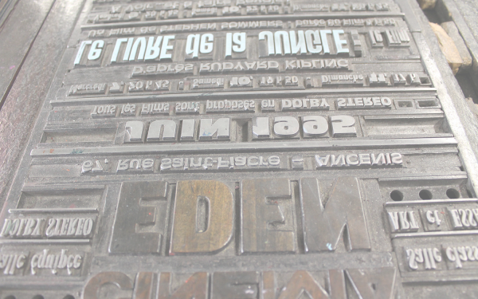
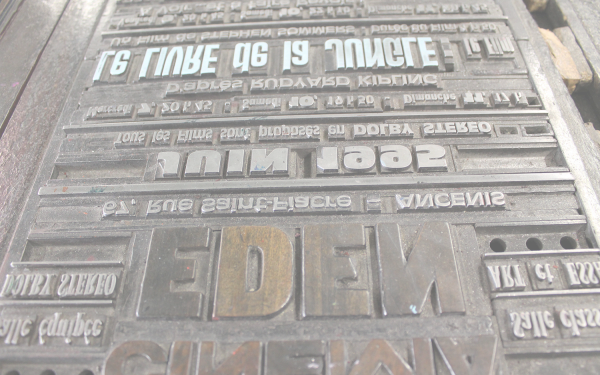
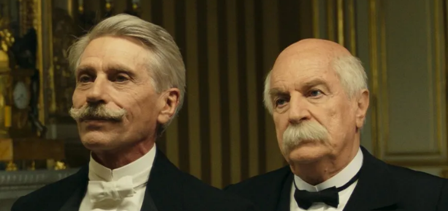
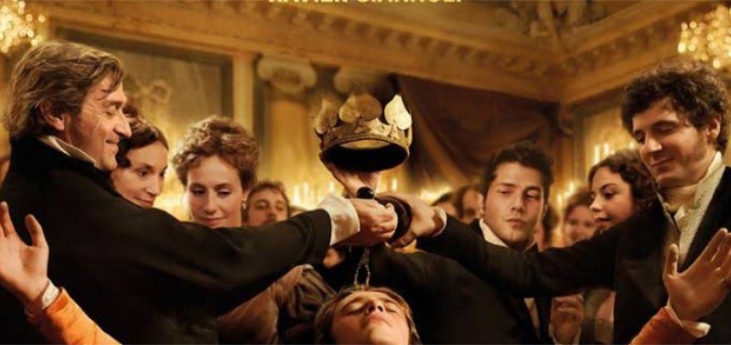
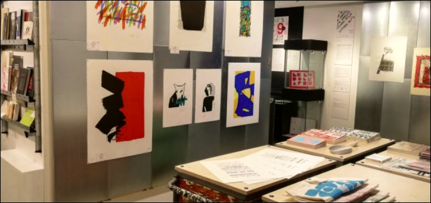
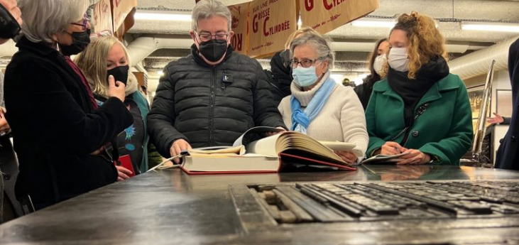

Musée
et
atelier
de
l'imprimerie
de Nantes
réserver
Tarifs
Scolaire / Etudiant
5 €
Adulte
8 €
exposition principale

Le Musée de l’imprimerie dispose d’une galerie le Corridor pour faire ses expositions.
Leur particularité est d’être toujours en lien direct avec nos métiers ou nos activités. Que ce soit la présentation d’un nouveau caractère, la présentation de livres sur le voyage, les enveloppes commerciales et à trous, les en-têtes de lettres des grandes sociétés industrielles nantaises.
Le Musée de l’imprimerie dispose d’un fonds de 2 000
Estampes originales d’artistes nationaux et internationaux, toutes réalisées sur les presses du musée. Ces œuvres sont à la disposition des organismes intéressés sous forme d’expositions « clés en main ».
Les moyens techniques du Musée sont mis à la disposition des artistes
Afin qu’ils aient la possibilité de diversifier et d’étendre l’exercice de leur art par l’intermédiaire de la typographie, de la lithographie, de la taille-douce ou de la linogravure. Vous disposez des matériels nécessaires pour pourvoir parfaitement exercer et diversifier l’exercice de votre art.
en savoir plus
stages
À l’heure du multimédia, découvrez le conservatoire des matériels, des gestes et des métiers du Livre.
 

actualités
10 octobre 2021
Le Tigre et le Président, un nouveau film au musée
Après Le Libertin de Gabriel Aghion, Les Illusions perdues de Xavier Giannoli, le Musée-Atelier de l’Imprimerie est fier d’avoir participé à la réalisation du très beau film Le Tigre et le Président ! Merci à André Dussolier, Jacques Gamblin, et au réalisateur, Jean-Marc Peyrefitte, pour leur […]
21 octobre 2021
Xavier Giannoli au Musée avec le tournage des Illusions perdues de Balzac
C’est au Musée de l’imprimerie à Nantes que quelques séquences ont été tournées pour le film de Xavier Giannoli : Les Illusions perdues d’Honoré de Balzac. La grosse presse Voirin a imprimé la page de journal. Pour les besoins du film, le Musée a prêté plusieurs machines qui ont servi à la reconstitution d’un atelier d’imprimerie.
25 novembre 2021
Cure de rajeunissement
Tout change. Le musée de l’imprimerie avec sa nouvelle appellation (MAI Musée Atelier de l’Imprimerie) s’offre une cure de rajeunissement sur l’extérieur. L’intérieur aussi est totalement renouvelé : tant dans son accueil (hall plus large) que dans la partie exposition. Découvrez ces nouveautés. Et bien sûr […]
16 janvier 2022
Une personnalité visite le musée
Malgré un emploi du temps chargé, Jean-Luc Mélenchon s’est offert une petite capsule hors du temps en visitant le Musée de l’imprimerie de Nantes, qui rappelle la première et immense innovation technologique en Europe.